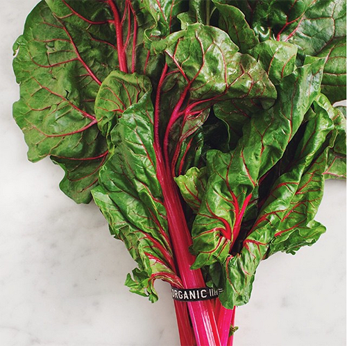
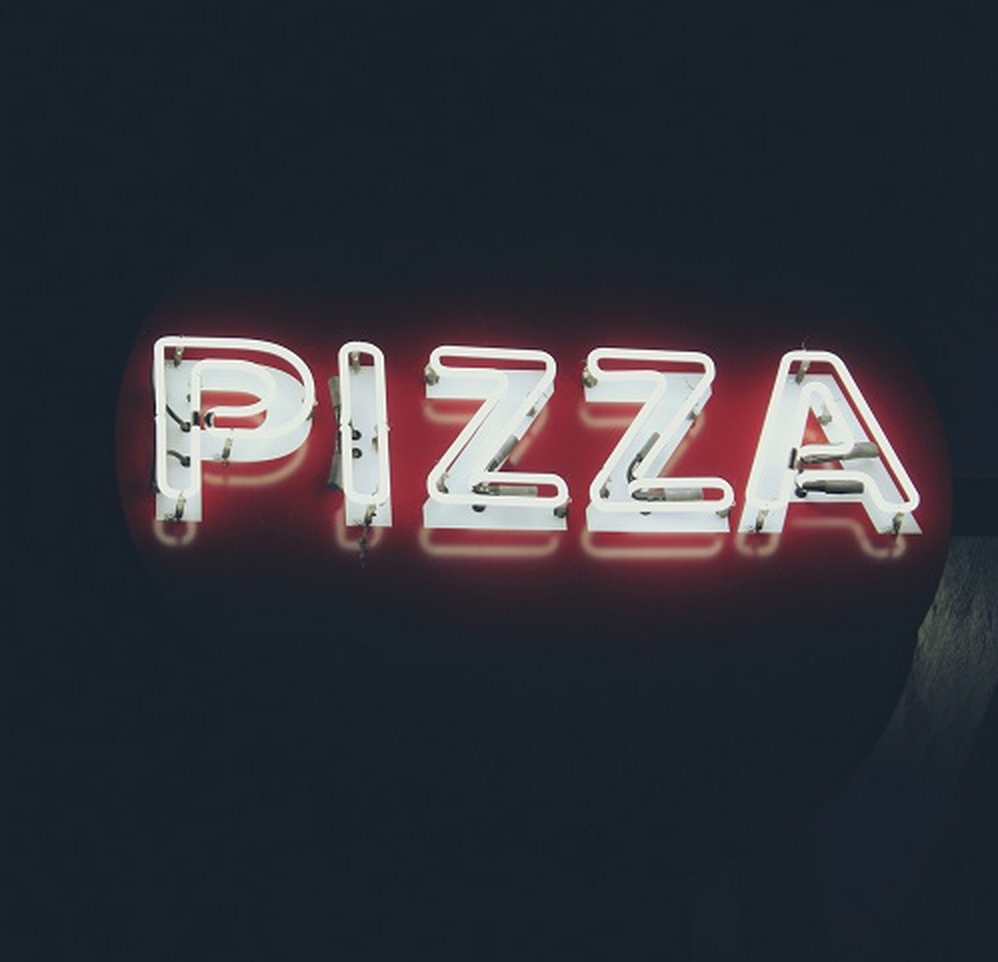

Fruits are a great way to be healthy and get that sweet craving you always want without having to worry about having too much sugar. I especially love the fruits listed because they are inexpensive and easy to eat on the go.
Vegetables

Vegetable
My favorite vegetables are:
Brocolli
Squash
Lettuce
Tomatoes
Vegetables are great for keeping you feeling like you're a million bucks. Some help your skin and help you maintain a healthy life. You should definitely eat some vegetables if you want to life a long and healthy life, I know I do!
Greasy Food

Pizza
My favorite greasy foods are:
Burgers
Burgers
Burgers
Pizza
Greasy foods are a great way to feel bad about yourself after eating them, nonetheless, they taste amazing! My favorite greasy food (as mentioned above) is a burger, it doesn't even matter from where. Nothing like a bacon cheeseburger to set the mood of never wanting to eat again for three days. Quick Tip: If you love burgers as much as I do, please recommend me some to try out at here.